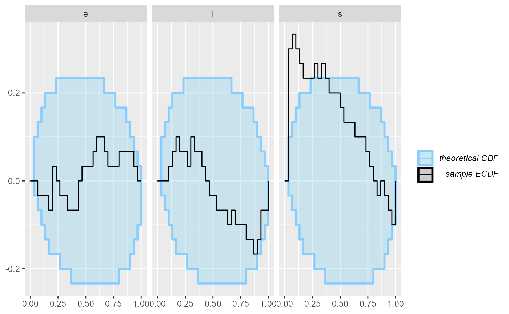
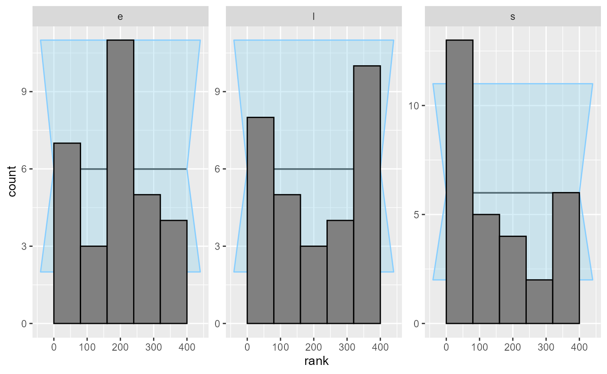
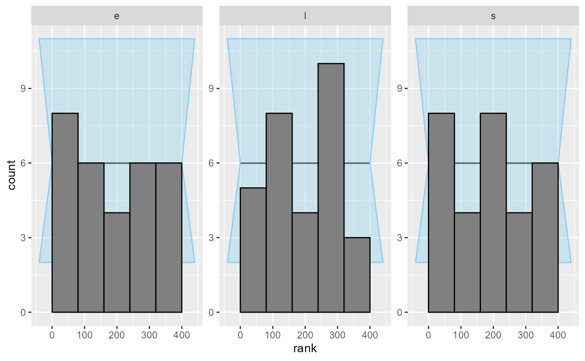
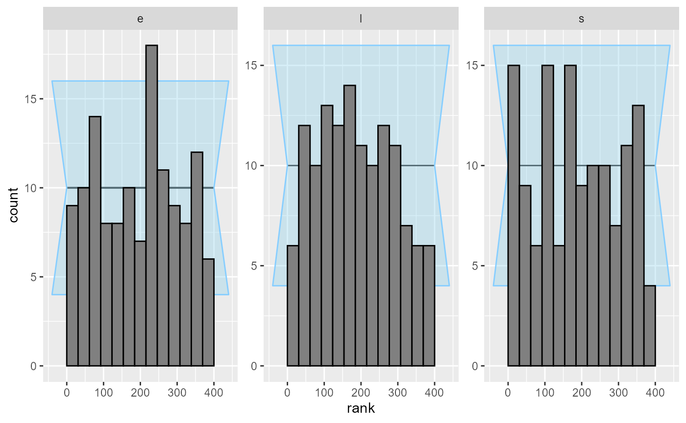

SBC with discrete parameters
Martin Modrák
2021-09-17
discrete_params.RmdSBC was primarily designed for continuous parameters, but can be used with models that have discrete parameters - whether the parameters are directly represented (e.g. in JAGS) or marginalized out (as is usual in Stan).
library(SBC);
library(ggplot2)
use_cmdstanr <- TRUE # Set to false to use rstan instead
if(use_cmdstanr) {
library(cmdstanr)
} else {
library(rstan)
}
# Multiprocessing support
library(future)
plan(multisession)
# The fits are very fast and we fit just a few,
# so we force a minimum chunk size to reduce overhead of
# paralellization and decrease computation time.
options(SBC.min_chunk_size = 5)
# Setup caching of results
cache_dir <- "./discrete_params_SBC_cache"
if(!dir.exists(cache_dir)) {
dir.create(cache_dir)
}Model from: https://mc-stan.org/docs/2_26/stan-users-guide/change-point-section.html
data {
real<lower=0> r_e;
real<lower=0> r_l;
int<lower=1> T;
int<lower=0> y[T];
}
transformed data {
real log_unif;
log_unif = -log(T);
}
parameters {
real<lower=0> e;
real<lower=0> l;
}
transformed parameters {
vector[T] lp;
lp = rep_vector(log_unif, T);
for (s in 1:T)
for (t in 1:T)
lp[s] = lp[s] + poisson_lpmf(y[t] | t < s ? e : l);
}
model {
e ~ exponential(r_e);
l ~ exponential(r_l);
target += log_sum_exp(lp);
}
generated quantities {
int<lower=1,upper=T> s;
s = categorical_logit_rng(lp);
}
if(use_cmdstanr) {
model_1 <- cmdstan_model("stan/discrete_params1.stan")
backend_1 <- SBC_backend_cmdstan_sample(model_1)
} else {
model_1 <- stan_model("stan/discrete_params1.stan")
backend_1 <- SBC_backend_rstan_sample(model_1)
}Now, let’s generate data from the model.
generate_single_dataset_1 <- function(T, r_e, r_l) {
e <- rexp(1, r_e)
l <- rexp(1, r_l)
s <- sample.int(T, size = 1)
y <- array(NA_real_, T)
for(t in 1:T) {
if(t <= s) {
rate <- e
} else {
rate <- l
}
y[t] <- rpois(1, rate)
}
list(
parameters = list(
e = e, l = l, s = s
), generated = list(
T = T,
r_e = r_e,
r_l = r_l,
y = y
)
)
}
generator_1 <- SBC_generator_function(generate_single_dataset_1, T = 5, r_e = 0.5, r_l = 0.1)
set.seed(85394672)
datasets_1 <- generate_datasets(generator_1, 30)
results_1 <- compute_results(datasets_1, backend_1,
cache_mode = "results",
cache_location = file.path(cache_dir, "model1"))## Results loaded from cache file 'model1'## - 7 (23%) fits had at least one Rhat > 1.01. Largest Rhat was NA.## - 25 (83%) fits had tail ESS undefined or less than half of the maximum rank, potentially skewing the rank statistics. The lowest tail ESS was NA.
## If the fits look good otherwise, increasing `thin_ranks` (via recompute_statistcs) or number of posterior samples (by refitting) might help.## - 2 (7%) fits had divergent transitions. Maximum number of divergences was 3.## Not all diagnostics are OK. You can learn more by inspecting $default_diagnostics, $backend_diagnostics and/or investigating $outputs/$messages/$warnings for detailed output from the backend.Here we also use the caching feature to avoid recomputing the fits when recompiling this vignette. In practice, caching is not necessary but is often useful.
TODO the diagnostics are false positives, because Rhat and ESS don’t work very well for discrete parameters. We need to figure out how to handle this better.
We can quickly note that the statistics for the s parameter are extreme - many ranks of 0 and extreme z-scores, including -Infinity. Seing just one or two such fits should be enough to convince us that there is something fundamentally wrong.
dplyr::filter(results_1$stats, parameter == "s") ## # A tibble: 30 x 15
## dataset_id parameter simulated_value rank z_score mean median sd mad
## <int> <chr> <dbl> <dbl> <dbl> <dbl> <dbl> <dbl> <dbl>
## 1 1 s 3 185 0.0182 2.97 3 1.61 2.97
## 2 2 s 1 24 -1.90 2.02 2 0.537 0
## 3 3 s 4 127 -1.37 4.67 5 0.489 0
## 4 4 s 1 10 -2.85 2.86 3 0.651 0
## 5 5 s 5 398 2.76 2.86 3 0.775 0
## 6 6 s 2 272 0.0449 1.94 1 1.42 0
## 7 7 s 3 0 -Inf 4 4 0 0
## 8 8 s 2 130 -0.594 2.87 3 1.46 1.48
## 9 9 s 2 0 -6.84 2.99 3 0.144 0
## 10 10 s 2 3 -8.68 3.00 3 0.115 0
## # ... with 20 more rows, and 6 more variables: q5 <dbl>, q95 <dbl>, rhat <dbl>,
## # ess_bulk <dbl>, ess_tail <dbl>, max_rank <int>Inspecting the statistics shows that quite often, the model is quite sure of the value of s while the simulated value is just one less.
Looking at the ecdf_diff plot we see that this seems to compromise heavily the inference for s, but the other parameters do not show such bad behaviour.
plot_ecdf_diff(results_1)
plot_rank_hist(results_1)
So what happened? After some inspection, you may notice that the simulator does not match the model - the model takes the early rate (e) for points t < s while the simulator takes e for points t <= s, so there is effectively a shift by one time point between the simulator and the model. So let’s assume that we beleive that the Stan model is in fact right. We therfore updated the simulator to match the model:
generate_single_dataset_2 <- function(T, r_e, r_l) {
e <- rexp(1, r_e)
l <- rexp(1, r_l)
s <- sample.int(T, size = 1)
y <- array(NA_real_, T)
for(t in 1:T) {
if(t < s) { ### <--- Only change here
rate <- e
} else {
rate <- l
}
y[t] <- rpois(1, rate)
}
list(
parameters = list(
e = e, l = l, s = s
), generated = list(
T = T,
r_e = r_e,
r_l = r_l,
y = y
)
)
}
generator_2 <- SBC_generator_function(generate_single_dataset_2, T = 5, r_e = 0.5, r_l = 0.1)
set.seed(5846502)
datasets_2 <- generate_datasets(generator_2, 30)
results_2 <- compute_results(datasets_2, backend_1,
cache_mode = "results",
cache_location = file.path(cache_dir, "model2"))## Results loaded from cache file 'model2'## - 9 (30%) fits had at least one Rhat > 1.01. Largest Rhat was NA.## - 26 (87%) fits had tail ESS undefined or less than half of the maximum rank, potentially skewing the rank statistics. The lowest tail ESS was NA.
## If the fits look good otherwise, increasing `thin_ranks` (via recompute_statistcs) or number of posterior samples (by refitting) might help.## - 2 (7%) fits had divergent transitions. Maximum number of divergences was 2.## Not all diagnostics are OK. You can learn more by inspecting $default_diagnostics, $backend_diagnostics and/or investigating $outputs/$messages/$warnings for detailed output from the backend.
plot_rank_hist(results_2)
plot_ecdf_diff(results_2)
Looks good, so let us add some more SBC steps to make sure the model behaves well.
set.seed(54321488)
datasets_3 <- generate_datasets(generator_2, 100)
results_3 <- compute_results(datasets_3, backend_1)## - 19 (19%) fits had at least one Rhat > 1.01. Largest Rhat was NA.## - 85 (85%) fits had tail ESS undefined or less than half of the maximum rank, potentially skewing the rank statistics. The lowest tail ESS was NA.
## If the fits look good otherwise, increasing `thin_ranks` (via recompute_statistcs) or number of posterior samples (by refitting) might help.## - 7 (7%) fits had divergent transitions. Maximum number of divergences was 20.## Not all diagnostics are OK. You can learn more by inspecting $default_diagnostics, $backend_diagnostics and/or investigating $outputs/$messages/$warnings for detailed output from the backend.
results_all <- bind_results(results_2, results_3)
plot_rank_hist(results_all)
plot_ecdf_diff(results_all)
Now - as far as this amount of SBC steps can see, the model is good and we get good behaviour for both the continuous and the discrete parameters.